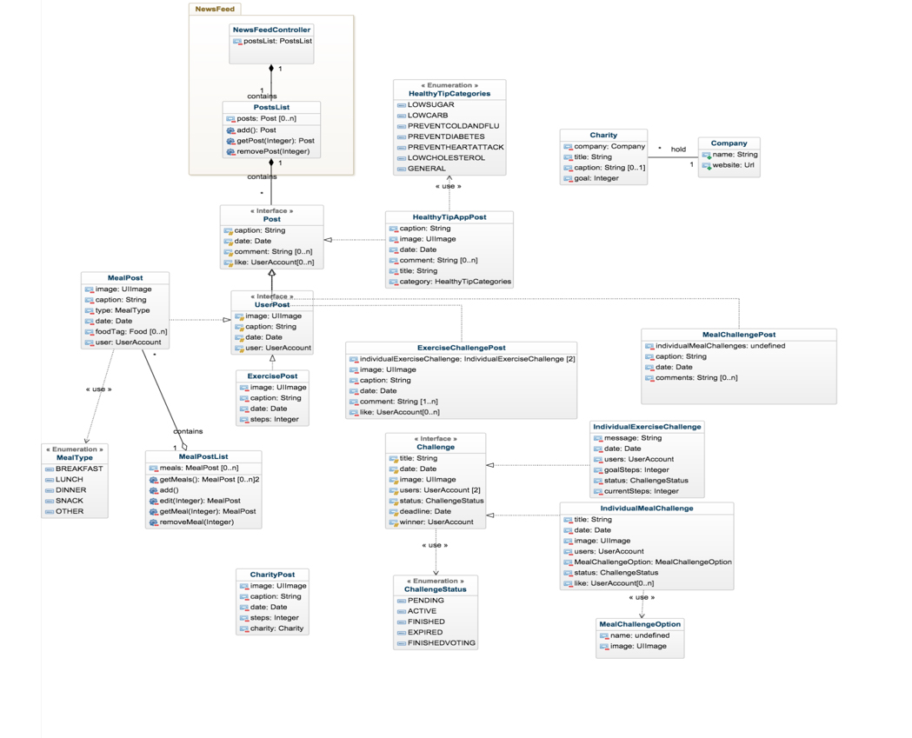

Balance is a mobile application for anyone who is interested in a healthy lifestyle through balanced nutrition and physical activities. Unlike competitors, whose complicated tracking methods fail to give casual users practical recommendations and require them to form new habits, Balance involves users’ friends to help them with healthier choices and leverages on users’ daily activities, walking and photo taking.
This mobile application is a good tool to be introduced for a company’s internal use to increase the general health level of employees. or for an individual’s use.
The final deliverable of the project was a front-end prototype of the app.
Balance was the first IOS app I developed, using Swift and XCode IDE. It was developed with a team of 6 in 10 weeks.
Since it was a social app, the biggest challenge I had to deal with were handling an enormous amount of data, and at the same time, ensuring a good user flow within the app. On the other hand, the fact that we were new to and IOS development was also a challenge for the team.
We started Balance, the first project in the Master of Digital Media Program, with a lot of unknowns about how the project might work, and how to collaborate with other people who have different backgrounds. In the first 2 weeks, we learned about Agile Methodology and how it could work within this project. The next 3 weeks were spent on ideation and paper prototyping in order to find all the design challenges that the team needed to solve. This was a very interesting experience for me, because as a student from Computer Science Background, this was the very first time I started a prototype with just paper and pen instead of coding. Essentially, I found this way of prototyping saved us a lot of time to understand the users and the UX of the product, and could be easily iterated within just a couple weeks.
After figuring out the market's demand and the user's need, we jumped into the production phase, in which I started with an information architecture diagram.
The information architecture is a diagram which clarifies the user flow of the app, through which I could easily understand how the data might flow from a screen to another.
Subsequently, I created a class diagram. I realized that a class diagram could considerably help me visualize how to represent the data and information in the app.
Finally, I spent the last 3 weeks on coding. The project is now on my GitHub
Special thanks to Judy Hamilton for being our awesome client!